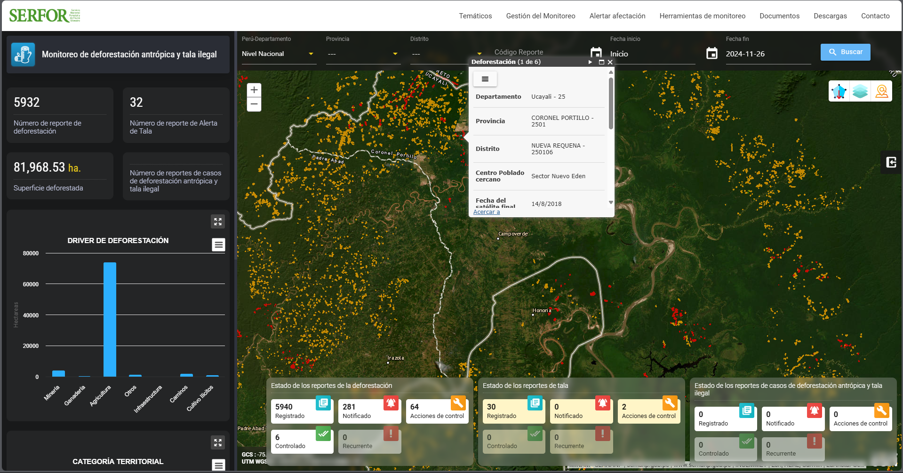
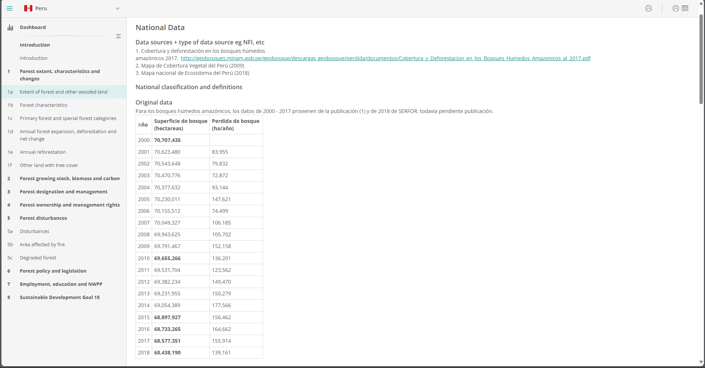

Pontificia Universidad Católica del Perú | Miembro del Grupo de Investigación sobre Estado y Sociedad (GIES - PUCP) | Asistente de investigación en PULSO PUCP
2024-11-27
Este estudio es relevante porque analiza cómo las dinámicas entre actores nacionales y subnacionales convergen con los intereses económicos internacionales de grandes empresas, facilitando el aumento de la deforestación en la región a través de la expansión agroindustrial.
Al identificar los mecanismos que permitieron este proceso, este análisis pretende esclarecer el papel del Estado y los actores económicos en la pérdida de los bosques en esta región amazónica.
Las investigaciones sobre deforestación se pueden organizar en torno a cómo interactúan los actores nacionales o subnacionales con economías, ya sean legales o no. Además, de un tercer grupo en donde tanto actores nacionales como subnacionales trabajan conjuntamente, permitiendo la deforestación.
:::
::::
A pesar de estos avances, queda un vacío importante en la literatura respecto a cómo las dinámicas locales y nacionales se interceptan en contextos específicos como el caso peruano, donde la complicidad entre actores estatales y privados parece incentivar la deforestación. Esto subraya la necesidad de mayores estudios que analicen cómo es que hay una sinergia entre actores políticos, como los nacionales y subnacionales, con presiones económicas por medio de grandes empresas que permitirían un aumento en la deforestación.
¿Cuáles son los factores político-económicos que explican el aumento de la deforestación en Nueva Requena, Ucayali entre los años 2010-2016?
La deforestación en Nueva Requena, por lo tanto, no fue un fenómeno aislado, sino el resultado de la interacción entre políticas nacionales laxas, autoridades locales corruptas y empresas internacionales interesadas en la expansión agroindustrial. La deforestación no solo trajo consigo la pérdida de biodiversidad y la degradación de los ecosistemas, sino que también socavó los derechos territoriales de las comunidades indígenas y campesinas, quienes vieron cómo sus tierras eran invadidas y destruidas en nombre del desarrollo económico.
El mecanismo principal que explica la variación de la deforestación (variable dependiente) en Nueva Requena es la interacción coordinada entre las tres variables independientes mencionadas.
El impulso del Estado central hacia la agroindustria (V1) sentó las bases para la atracción de inversiones internacionales, priorizando el desarrollo económico por encima de la conservación.
La promoción de políticas subnacionales de desarrollo económico (V2) otorgó incentivos adicionales para la conversión de tierras y la infraestructura.
La intervención de empresas privadas (V3) catalizó la deforestación al aprovechar las condiciones facilitadas por el Estado y la debilidad de los controles locales.
El enfoque de gobernanza multinivel de Hurrell permite analizar cómo las decisiones sobre la Amazonía no se toman de forma aislada.
El régimen fragmentado permite entender cómo la falta de coherencia y la dispersión en los regímenes internacionales y nacionales de conservación permiten que actores poderosos, como grandes empresas y actores políticos nacionales, modifiquen las políticas según sus intereses particulares.
La investigación empleará un enfoque cualitativo, con un complemento cuantitativo, para obtener una comprensión integral del fenómeno.
RAISG (Red Amazónica de Información Socioambiental Georreferenciada)
SAMI (Sub Módulo Monitoreo Satelital de los Impactos al Patrimonio Forestal) del SERFOR
Vista previa del SAMI
Global Forest Resources Assessment (FRA) de la FAO
Vista previa del FRA
Metodología no usada antes en tesis o proyectos en estos temas en la academia peruana.
🟡 🟡 🟡 🟡 🟡
:::